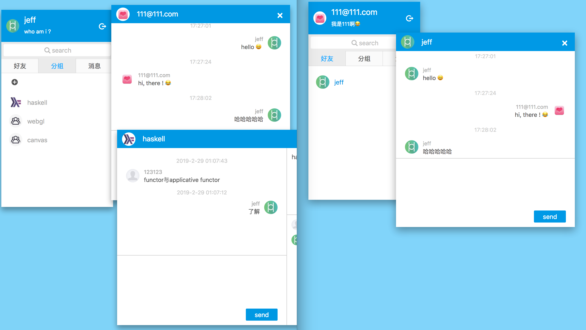

原文地址：koa+mysql+vue+socket.io全栈开发之前端篇
React 与 Vue 之间的对比，是前端的一大热门话题。
vue 简易上手的脚手架，以及官方提供必备的基础组件，比如 vuex，vue-router，对新手真的比较友好；react 则把这些都交给社区去做，虽然这壮大了 react 的生态链，但新手要弄出一套趁手的方案挺麻烦的，不过好在现在有很多类似 dva的方案了。
vue 比较讨喜的一点，就是它的数据双向流动在表单开发时特别方便，而 react 在这方面可就麻烦多了。
但是 vue 复杂的 api ，简直让人头大，光是文档说明都几十页了。太多的语法，太多的魔法符号，对进化速度越来越快的前端届来说，就是入手这个框架的最大阻碍。
而相反 react 的 api 数量简直可以忽略不计了，顶多花几小时就能看完官方文档。你只要理解 JavaScript，就能理解 react 的很多行为。react 的很多用法，它的 api 都是符合直觉的，你对它用法的猜测基本都是八九不离十的，这真是大大降低了心智负担。
除此之外，react 的 jsx 语法表达能力更强，还有 hoc 和 hooks 使代码也更容易组织和复用。
虽然我更喜欢 React ，但工作上的需求，还不是要你用什么你就得用什么😂，所以这个 demo 就当是探索 Vue 的前奏。
之前我还是有用过 vue 的，记得还是 1.0 版本，当时的潮流就是类似 angular 1.x 的 mvvm 方案，数据双向流动。那时的 vue 远没有现在的热度，组件也少，没有 vue-router，没有 vuex，组件之前的通信简直太痛苦了。现在 vue 2.x 比起之前，已经发生了天翻地覆的变化，vue 也在不断向 react 靠拢，而我也只能从头开始学起。
闲话说得有点多，还是赶紧进入主题吧
选择 webpack 4 打包和管理，template 引擎使用 pug ，css 预编译是 scss。
// webpack.common.js
module.exports = {
entry: './src/main.js',
output: {
path: resolve(__dirname, 'dist'),
filename: '[name]-[hash].js'//输出文件添加hash
},
optimization: { // 代替commonchunk, 代码分割
runtimeChunk: 'single',
splitChunks: {
cacheGroups: {
vendor: {
test: /[\\/]node_modules[\\/]/,
name: 'vendors',
chunks: 'all'
}
}
}
},
module: {
rules: [
{
test:/\.vue$/,
exclude: /node_modules/,
use:['vue-loader']
},
{
test: /\.js?$/,
exclude: /node_modules/,
use: ['babel-loader']//'eslint-loader'
},
{
test: /\.pug$/,
use: ['pug-plain-loader']
},
{
test: /\.css$/,
use: ['style-loader', 'css-loader']
},
{
test: /\.scss$/,
use: ['style-loader', 'css-loader', 'postcss-loader', 'sass-loader']
},
{
test: /\.(png|jpg|jpeg|gif|eot|ttf|woff|woff2|svg|svgz)(\?.+)?$/,
use: [{
loader: 'url-loader',
options: {
limit: 1000
}
}]
}
]
},
plugins: [
new VueLoaderPlugin(),
new CleanWebpackPlugin([resolve(__dirname, 'dist')]),//生成新文件时，清空生出目录
new HtmlWebpackPlugin({
template: './public/index.html',//模版路径
filename: 'index.html',//生成后的文件名,默认index.html
favicon: './public/favicon.ico',
minify: {
removeAttributeQuotes:true,
removeComments: true,
collapseWhitespace: true,
removeScriptTypeAttributes:true,
removeStyleLinkTypeAttributes:true
}
}),
new HotModuleReplacementPlugin()//HMR
]
};就是开发服务器 devServer的配置，监控代码变更。
// webpack.dev.js
module.exports = merge(common, {
mode: 'development',
devtool: 'inline-source-map',
devServer: {
contentBase: './dist',
index:'index.html',
port: 3002,
compress: true,
historyApiFallback: true,
hot: true
}
});module.exports = {
presets: [
[
'@vue/app', {
"useBuiltIns": "entry"
}
]
]
}public #公共目录
server #后端目录
src #前端目录
├── assets #静态文件目录
├── common #工具目录
├── components #组件目录
├── store # vuex store目录
├── App.vue # 根组件
├── main.js # 入口文件
└── router.js #路由 下面使用了嵌套路由，使用的是基于 history 的路由，也可以选择基于 hashchange的路由。
import Vue from 'vue'
import Router from 'vue-router'
//...
Vue.use(Router)
//路由
const routes = [{
path: '/',
name: 'home',
component: Index
},{
path: '/sign',
name: 'sign',
component: Sign,
children: [ //嵌套路由
{
path: "log",
name: "login",
component: Login
},
{
path: "reg",
name: "register",
component: Register
},
{ path: '*', redirect: 'log' }
]
}, { path: '*', redirect: '/' }]
export default new Router({
mode: "history",
routes
})把router，store 和根组件组合起来
import Vue from 'vue'
import App from './App.vue'
import router from './router'
import store from './store'
import '../public/base.min.css'
import '../public/fontello.css'
Vue.config.productionTip = false
new Vue({
router,
store,
render: h => h(App),
}).$mount('#app')模版，逻辑代码，样式合成到一个页面也是我欣赏 vue 的一个方面，因为这样你就不需要在多个文件之间反复的切换。
pug 就是之前的 jade，它的简洁在复杂的页面下会让 template 清晰不少，最起码会让你少敲代码，这里以index 页面的部分代码为例。
<template lang="pug">
div.content
div.bar
header(v-drag)
div.avatar(v-on:click="profile(selfInfo)")
img(:src="selfInfo.avatar? selfInfo.avatar: aPic.src")
div.name {{ selfInfo.nick }}
p {{ selfInfo.signature}}
i.icon-logout(v-on:click="logout")
div.body
div.main-panel(v-if="!isSearch")
nav
div(v-on:click="showTab(0)" :class="{active:tabIndex==0}") 好友
div(v-on:click="showTab(1)" :class="{active:tabIndex==1}") 分组
div(v-on:click="showTab(2)" :class="{active:tabIndex==2}") 消息
span(v-if="dealCount") {{dealCount}}
ul.friends(v-if="tabIndex == 0")
li(v-for="item in friends" :key="item.id")
div.avatar(v-on:click="profile(item)")
img(:src="item.avatar? item.avatar: aPic.src")
p(v-on:click="chatWin(item)") {{item.nick}}
span(v-if="item.reads && item.reads > 0") ({{item.reads}})
//动态创建组件
component(:is="item.component" v-for="(item,i) in wins" :key="item.id"
:info="item.info"
:sty="item.sty"
:msgs="item.msgs"
v-on:close="closeWin(i)"
v-on:setZ="setZ(i)")
</template>上面用到了 vue 的 动态创建组件 的概念，什么意思呢？这个组件在当前页面中是不存在的，需要我们触发之后，才开始创建。比如，当你点击某个按钮，才开始加载创建组件，然后填充到页面中来。下面就是动态组件相关功能的编写。
data() {
return {
wins: [] //组件列表
}
},
methods: {
addWin(info, com) { // 添加组件的方法
this.wins.push({
msgs: info.msgs || [],
info,
sty: {
left: l * 30 + 270,
top: l * 30 + 30,
z: 0
},
component: com
});
}
}
//填充组件
component(:is="item.component" v-for="(item,i) in wins" :key="item.id"
:info="item.info"
:sty="item.sty"
:msgs="item.msgs"
v-on:close="closeWin(i)"
v-on:setZ="setZ(i)")这里就是业务逻辑的部分了，以部分代码为例, 具体的部分参考官方的文档
<script>
import { mapState, mapGetters } from "vuex";
import ChatMsg from "./ChatMsg.vue";
import Profile from "./Profile.vue";
import { get, post } from "../common/request";
export default {
name: "index",
data() {
return {
tabIndex: 0,
wins: [],
aPic: {
src: require("../assets/avatar.jpg")
}
};
},
async created() {
//...
},
computed: {
...mapState(["selfInfo"]),
...mapGetters([
"isLogin",
"friends",
"msgs"
])
},
watch: {
isLogin: {
//监听登录状态
handler: function(val, old) {
//...
}
// ,immediate: true //进入组件立即执行一次
}
},
methods: {
addWin(info, com) {},
sendMsg(user,data){}
//...
}
}
</script>使用了 vue 默认的 scoped ，当然最完善的方案是 css-module，配置要复杂一些，当然这要看你项目需求。预编译器使用的是 scss，个人认为比较强大和方便。
<style lang="scss" scoped>
$blue: hsl(200, 100%, 45%);
@mixin nowrap {
white-space: nowrap;
overflow: hidden;
text-overflow: ellipsis;
}
.content {
height: 100%;
width: 1000px;
margin: 0 auto;
position: relative;
}
.main-panel {
width: 100%;
}
.search-panel {
width: 100%;
min-height: 313px;
max-height: 513px;
li {
line-height: 2;
}
}
.bar {
position: absolute;
top: 30px;
width: 250px;
background-color: #fff;
user-select: none;
box-shadow: 0 6px 20px 0 hsla(0, 0%, 0%, 0.19),
0 8px 17px 0 hsla(0, 0%, 0%, 0.2);
header {
display: flex;
align-items: flex-start;
align-items: center;
background-color: $blue;
color: #fff;
.avatar {
width: 30px;
height: 30px;
margin: 10px;
border: 1px solid $blue;
border-radius: 50%;
overflow: hidden;
cursor: pointer;
&:hover {
border-color: #fff;
}
img {
width: 100%;
height: 100%;
}
}
}
}
<style>vuex 相比 react 中的 redux，使用起来也更加简单和方便，尽管相比 redux 可能没有那么 "纯"，但好用就行。 vuex 直接把异步的 action 封装进里面，使用module将不同组件的状态区分开来。可以说 vuex 的 store 集中了 项目大部分与 状态相关的业务逻辑，这也是 vue 项目的一大关键点。
vuex 的 store 和 redux 的 store 一样。
import Vue from 'vue'
import Vuex from 'vuex'
import { state, mutations } from './mutations'
import * as getters from './getters'
import * as actions from './actions'
import friend from './modules/friend'
import msg from './modules/msg'
Vue.use(Vuex)
export default new Vuex.Store({
actions,
getters,
state,
mutations,
modules: {
friend,
msg
}
})vuex 中的 state 对应 redux 的 state，mutations 则类似 redux 中的 action，其中mutations是同步的。
export const state = {
loginInfo: { token },
selfInfo: selfInfo,
dialog: { txt: 'content', cancal: false, callback: () => { }, show: false }
}
export const mutations = {
showDialog(state, payload) {
state.modal.visible = true;
state.dialog = Object.assign({}, state.dialog, payload);
state.dialog.show = true;
},
closeDialog(state) {
state.modal.visible = false;
state.dialog.show = false;
},
setLoginInfo(state) {
state.loginInfo = { token: localStorage.getItem("token") };
},
setSelfInfo(state, payload) {
state.selfInfo = payload;
localStorage.setItem("selfInfo", JSON.stringify(payload));
},
logout() {
state.loginInfo = {};
state.selfInfo = {};
localStorage.clear();
}
}vuex 的 aciton 就是将异步的动作封装起来。而redux 得通过 redux-saga 之类的中间件才能实现类似的效果。
import { get, post } from "../common/request";
export const getInfo = ({ commit }) => {
return get("/getinfo").then(res => {
if (res.code == 0) {
commit("setSelfInfo", res.data.user);
commit("setFriends", res.data.friends);
commit("setGroup", res.data.groups);
commit("setMsgs", res.data.msgs);
} else if (res.code == 1) {
commit("logout");
} else {
commit('showDialog',{txt:res.message})
}
}).catch(err=>{
commit('showDialog',{txt:err.message})
});
}
export const updateSelf=({commit},form)=>{
post("/updateinfo", form).then(res => {
if (res.code == 0) {
commit("updateSelfInfo", form);
} else if (res.code == 1) {
commit("logout");
} else {
commit('showDialog',{txt:res.message})
}
}).catch(err=>{
commit('showDialog',{txt:err.message})
});
}
getters可以看成是对state 中某些字段的封装
export const visible = state => state.modal.visible
export const isLogin = state => !!state.loginInfo.token随着项目规模的扩展，拆分和模块化都是一个必然。针对某个子模块而设置的store，它的结构和根store一样，module 的 store 最终会合并到根 store里面。msg为例的编写方式如下:
import { get, post } from "../../common/request";
export default {
state: {
msgs: []
},
getters: {
msgs: state => state.msgs,
dealCount: state => state.msgs.filter(i => i.status == 0).length
},
actions: {
accept({ commit }, form) {
return post("/accept", { id: form.id, friend_id: form.from_id }).then(res => {
if (res.code == 0) {
commit("setMsgState", { id: form.id, status: 1 });
commit("addFriend", Object.assign({}, form, { id: form.from_id }));
} else {
commit('showDialog',{txt:res.message})
}
}).catch(err=>{
commit('showDialog',{txt:err.message})
});
},
reject({ commit }, form) {
post("/reject", { id: form.id }).then(res => {
if (res.code == 0) {
form.status = 2;
commit("setMsgState", form);
} else {
commit('showDialog',{txt:res.message})
}
}).catch(err=>{
commit('showDialog',{txt:err.message})
});
}
},
mutations: {
setMsgs(state, payload) {
state.msgs = payload;
},
setMsgState(state, payload) {
state.msgs.forEach(i => {
if (i.id == payload.id) {
i.status = payload.status;
}
})
},
addMsg(state, payload) {
state.msgs.unshift(payload);
}
}
}接着将websocket使用起来，让我们实现 好友聊天和分组聊天的功能，socket.io 的介绍可以看我之前的文章 关于socket.io的使用。
首先连接服务端的 socket，然后将自身的用户信息注册到 socket.io 服务，这样服务端才知道你是谁，也才能与其他人实行通信。
async created() {// vue 组件创建时建立socket连接
const token = localStorage.getItem("token") || "";
if (!token) {
return this.$router.push("/sign/log");
}
await this.$store.dispatch("getInfo");
this.socket = io("http://localhost:3001?token=" + token);
//注册用户信息后才开始与服务端通信
this.socket.emit("sign", { user: this.selfInfo, rooms }, res => {
// console.log(res);
this.$store.commit("friendStatus", res.data);
this.socket.on("userin", (map, user) => {
this.$store.commit("friendStatus", map);
showTip(user, "上线了");
});
this.socket.on("userout", (map, user) => {
this.$store.commit("friendStatus", map);
showTip(user, "下线了");
});
this.socket.on("auth", data => {
this.$store.commit('showDialog',{txt:data.message})
this.$store.commit("logout");
});
//接收申请好友和组群
this.socket.on("apply", data => {
this.$store.commit("addMsg", data);
});
//接收聊天信息
this.socket.on("reply", (user, data) => {
this.sendMsg(user, data);
});
//接收群组聊天信息
this.socket.on("groupReply", (info, data) => {
this.sendGroupMsg(info, data);
});
});
},
beforeDestroy() { //组件销毁之前，将socket 关闭
this.socket.close();
},socket.io 对应的服务端部分，逻辑主要包括用户注册，两人聊天，群聊天，当然对应的信息需要保存到数据库。 这里的技巧就是使用变量记录当前所有登录用户的信息。
const auth = require('./auth.js')
const { insertMsg, insertToUser } = require('../daos/message');
const log = require('../common/logger')
let MAP = {};//用户id和socket id
let LIST = []; //用户信息
let ROOMS = []; //房间
const currTime = () => {
const d = new Date(), date = `${d.getFullYear()}-${d.getMonth()}-${d.getDate()}`;
return ('0' + d.getHours()).slice(-2) + ':' + ('0' + d.getMinutes()).slice(-2) + ':' + ('0' + d.getSeconds()).slice(-2);
};
module.exports = io => {
// middleware
io.use(auth);
//namespace (/)
io.on('connection', socket => {
socket.emit('open', {
code: 0,
handshake: socket.handshake,
namespace: '/',
message: 'welcome to main channel, please sign'
});
//用户注册
socket.on('sign', ({ user, rooms }, fn) => {
if (!user.id) {
return fn({ code: 2, message: 'id not exist' });
}
MAP[user.id] = socket.id;
user.socketId = socket.id;
LIST.push(user);
socket.join(rooms);//加入自己所在的组
socket.emit('userin', MAP, user);
socket.broadcast.emit('userin', MAP, user);
fn({
code: 0,
message: 'sign success',
data: MAP
});
});
//两人聊天
socket.on('send', async (uid, msg) => {
const sid = MAP[uid];//接收用户socket.id
const cid = findUid(socket.id);//发送用户id
if (sid) { // 好友在线则发送
socket.to(sid).emit('reply', { id: cid, self: false }, { date: currTime(), msg });
}
// 给自己也发一份
socket.emit('reply', { id: uid, self: true }, { date: currTime(), msg });
// 保存数据库
try {
const ret = await insertMsg({ send_id: cid, receive_id: uid, content: msg });
insertToUser({ user_id: uid, send_id: cid, message_id: ret.insertId, is_read: sid ? 1 : 0 });
} catch (err) {
log.error(err);
}
});
//群组聊天
socket.on('groupSend', async ({gid,user}, msg) => {
//...
});
socket.on('acceptFriend', (uid) => {
//...
});
socket.on('sendApply', (uid, data) => {
//...
});
socket.on('disconnect', () => {
//...
});
});
};
首先得编写client.js，将前端服务启动起来，依然还是使用我们高效的koa框架。我这里图省事，和之前的服务端所在同一个根目录下，真正项目会将服务端部分和客户端部分 分离到不同目录或不同的服务器的。
const koa = require('koa')
const app = new koa()
const static = require('koa-static')
const compress = require('koa-compress')
const router = require('koa-router')()
const { clientPort } = require('./server/config/app')
const tpl = require('./server/middleware/tpl')
const path = require('path')
// gzip
app.use(compress({
filter: function (content_type) {
return /text|javascript/i.test(content_type)
},
threshold: 2048,
flush: require('zlib').Z_SYNC_FLUSH
}));
// set static directiory
app.use(static(path.join(__dirname, 'dist'), { index: false }));
// simple template engine
app.use(tpl({
path: path.join(__dirname, 'dist')
}));
// add routers
router
.get('/', ctx => {
ctx.render('index.html');
})
.get('/sign/*', ctx => {
ctx.redirect('/');
})
app.use(router.routes())
.use(router.allowedMethods());
// deal 404
app.use(async (ctx, next) => {
ctx.status = 404;
ctx.body = { code: 404, message: '404! not found !' };
});
// koa already had event to deal with the error, just rigister it
app.on('error', (err, ctx) => {
ctx.status = 500;
ctx.statusText = 'Internal Server Error';
if (ctx.app.env === 'development') { //throw the error to frontEnd when in the develop mode
ctx.res.end(err.stack); //finish the response
} else {
ctx.body = { code: -1, message: 'Server Error' };
}
});
if (!module.parent) {
app.listen(clientPort);
console.log('app server running at: http://localhost:%d', clientPort);
}启动服务端和客户端，我们整个demo就能运行，主要实现如下功能点：

接下来可以优化和增强的地方，我想到以下几点：
源代码: vue_qq